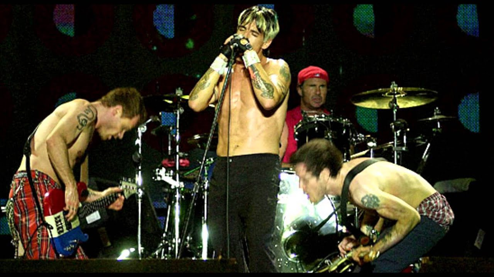

Shows

Rock in Rio - 2001
O show do Red Hot Chili Peppers no Rock in Rio 2001, realizado em 21 de janeiro para um público recorde de 250 mil pessoas, é um dos marcos mais emblemáticos da história do festival e da banda. Encerrando a terceira edição do evento no auge da turnê do álbum Californication, o quarteto — com John Frusciante em sua fase mais inspirada após o retorno à banda — entregou uma performance explosiva iniciada por uma jam frenética que desembocou em Around the World. O setlist icônico, que misturou hits imediatos como Otherside e Scar Tissue com clássicos do peso de Give It Away, transformou a Cidade do Rock em um coro gigante, onde a plateia brasileira surpreendeu os músicos ao cantar não apenas as letras, mas também os solos de guitarra e as linhas de baixo de Flea. Com Anthony Kiedis exibindo seu visual loiro oxigenado da época e uma química de palco impecável, a apresentação consolidou definitivamente a relação passional entre o grupo e o Brasil, sendo lembrada até hoje como uma das maiores celebrações do funk rock já registradas em solo latino-americano.
Second slide label
Conteúdo do segundo slide dos shows.
Third slide label
Conteúdo do terceiro slide dos shows.